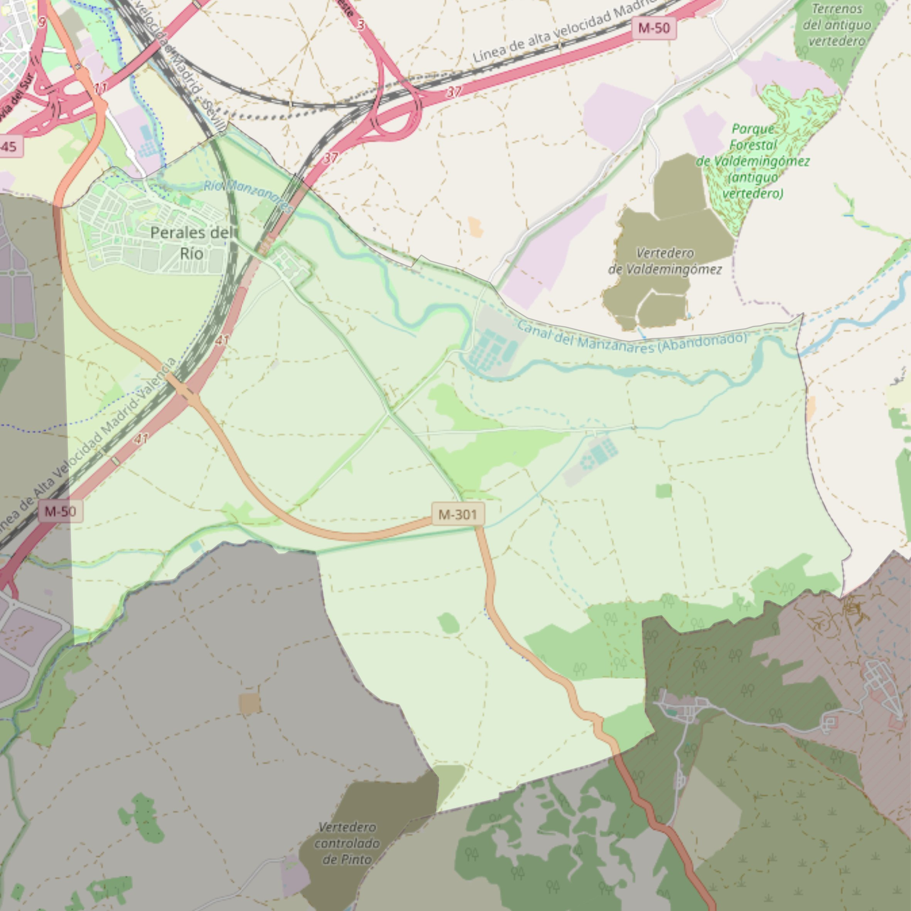

Santos Justo y Pastor

- Arciprestazgo
- Getafe
- Población
- Perales del Río
- Dirección postal
- Pza. de la Iglesia, 1
- Código postal
- 28909
- Extensión
- 35,25 km² (3.525 ha)
- Teléfono
- 918 645 006
- Correo electrónico
- santosjustoypastor-getafe@diocesisgetafe.es
Límites territoriales según el decreto
“Partiendo de la confluencia del Camino Alto de Los Llanos con el término municipal de Madrid, arrancan, en línea recta imaginaria, hasta el término municipal de Pinto; continúan por los límites de los términos municipales de Getafe-Pinto (en dirección este), Getafe-San Martín de la Vega (en dirección noreste), Getafe-Rivas-Vaciamadrid (en dirección norte) y Getafe-Madrid (en dirección oeste) hasta la confluencia con el Camino Alto de Los Llanos, punto de partida”. (Decreto de rectificación de límites del 17 de febrero de 1998; B-O Mar-98)